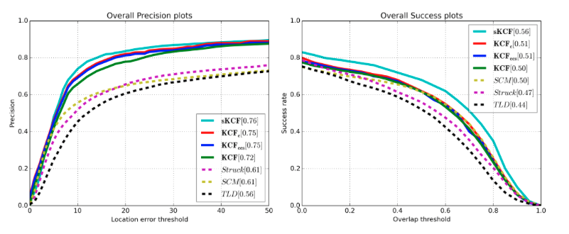
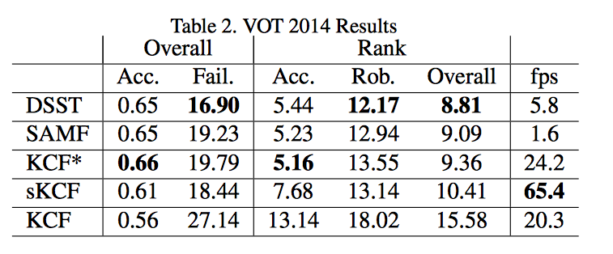
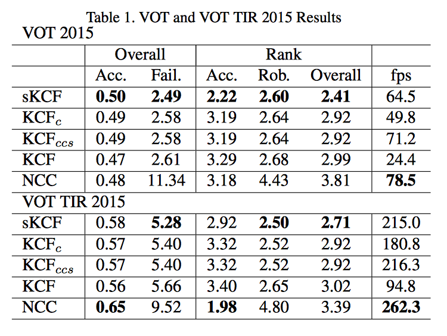

Correlation filters for long-term visual object tracking have recently seen great interest. Although they present competitive performance results, there is still a need for improving their tracking capabilities. In this paper, we present a fast scalable solution based on the Kernalized Correlation Filter (KCF) framework. We introduce an adjustable Gaussian window function and a keypoint-based model for scale estimation to deal with the fixed size limitation in the Kernelized Correlation Filter. Furthermore, we integrate the fast HoG descriptors and Intel’s Complex Conjugate Symmetric (CCS) packed format to boost the achievable frame rates. We test our solution using the Visual Tracker Benchmark and the VOT Challenge datasets. We evaluate our tracker in terms of precision and success rate, accuracy, robustness and speed. The empirical evaluations demonstrate clear improvements by the proposed tracker over the KCF algorithm while ranking among the top state-of-the- art trackers.
We developed three C++ implementations to compare against the original KCF algorithm (which is available as a Matlab implementation). First, we implemented the KCF algorithm using Gaussian correlation plus integrating Gaussian windowing and fast HoG descriptors. This implementation uses the full Fourier spectrum for the DFT/IDFT calls (i.e., no CCS). We call it KCFc. Second, we integrated CSS packed format to the previous implementation (i.e., KCFccs). Finally, we integrated scale estimation to the pre- vious variation (i.e., sKCF). All experiments are conducted on an Intel i5 (2415M) at 2.3GHz with 8GB of memory. We compared the three implementations to the original Matlab KCF implementation using HoG descriptors.
We conducted the evaluation of sKCF in three experiments. First, we compared the speed and accuracy performance using the 50 videos from the Visual Tracker Benchmark as in the KCF paper. Second, we evaluated and ranked our tracker against the top ranked trackers from the VOT Challenge 2014 dataset (i.e., 25 sequences). Finally, we compared our trackers using the VOT and TIR Challenge datasets from 2015 (60 and 20 sequences respectively).
 Figure 1. Precision and success plots for our three implementations (i.e., sKCF, KCFc, KCFccs), KCF, and the top three ranked trackers in the Visual Tracker Benchmark dataset.
 Table 1. Summarizes the top three raned trackers in the VOT 2014 dataset (i.e., 25 sequences). Our algorithm is the fastest of the top trackers with competive high accuracy and low failure rates. We archieved similar results to the two variants of the original KCF that incorporate scale support (i.e., SAMF and KCF*). The last entry in the table shows the KCF Matlab's code results on this 2014 challenge dataset.
 Table 2. Shows the results obtained from our three trackers implementations, the original KCF Matlab implementation and the required NCC tracker in the VOT and TIR 2015 datasets. The tables display the overall average accuracy and average number of failures in all the sequences, with their accuracy, robustness and overall ranks. The tables also display the average tracker speed given in frames per seconds (i.e., fps).
For further comparison and results have a look to the detailed VOT and TIR 2015 Challenge result papers
Best real-time method VOT Challenge 2015.
This research was partly funded by the Natural Sciences and Engineering Research Council of Canada (NSERC) and Thales, Canada.
@InProceedings{Solis_2015_ICCV_Workshops,
author = {Solis Montero, Andres and Lang, Jochen and Laganiere, Robert},
title = {Scalable Kernel Correlation Filter With Sparse Feature Integration},
journal = {The IEEE International Conference on Computer Vision (ICCV) Workshops},
month = {December},
year = {2015}
}